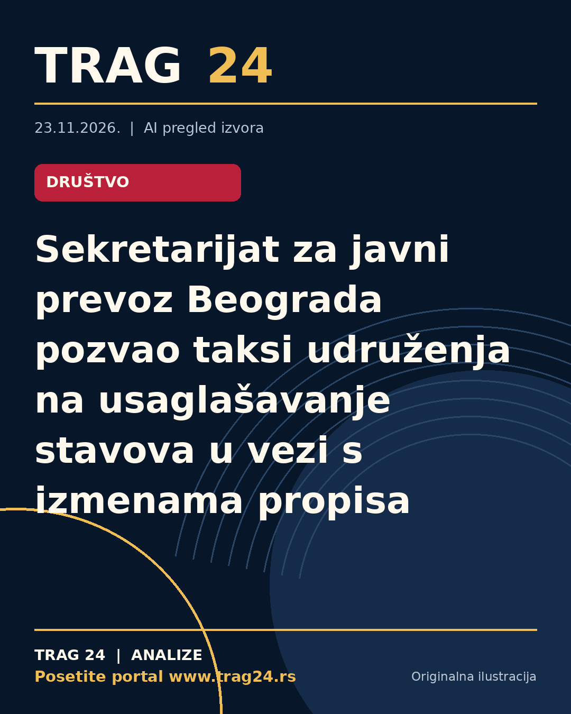

Sekretarijat za javni prevoz Beograda pozvao taksi udruženja na usaglašavanje stavova u vezi s izmenama propisa

ŠTA SE DOGODILO
Sekretarijat za javni prevoz Grada Beograda uputio je javni poziv svim taksi udruženjima koja rade na teritoriji Beograda da usaglase svoje zahteve i predloge u vezi sa izmenama Odluke o taksi prevozu. Ove izmene, koje su bile predmet razmatranja na sednici Skupštine grada, imaju za cilj da usklade tu odluku sa Ustavom Republike Srbije, naročito sa člancima koji garantuju slobodu preduzetništva i ravnopravnost svih privrednih subjekata na tržištu. Tokom istog dana, članovi Strukovnog udruženja taksi preduzetnika Beograda (SITAB) organizovali su protest ispred Skupštine grada, izražavajući nezadovoljstvo prema pomenutim izmenama.
HRONOLOGIJA
Pre sednice Skupštine grada Beograda, Sekretarijat za javni prevoz pripremio je i predložio izmene Odluke o taksi prevozu sa ciljem usklađivanja sa ustavnim odredbama. Na dan sednice, članovi udruženja SITAB su održali protest zbog, kako tvrde, nezakonitosti u primeni zakona i uvrštavanja Odluke o taksi prevozu u dnevni red. Istovremeno, nekoliko drugih taksi udruženja izrazilo je neslaganje sa protestom i ocenilo zahteve SITAB-a kao neopravdane. Sekretarijat je tom prilikom naglasio potrebu za usklađivanjem zahteva u cilju kvalitetnijeg dijaloga s gradskim vlastima.
ŠTA NAVODE IZVORI
Sekretarijat za javni prevoz istakao je da različiti i često suprotstavljeni zahtevi taksi udruženja otežavaju pronalaženje zajedničkog rešenja. Posebno je ukazano na nedoslednost u stavovima udruženja SITAB, koje je navodno podržavalo izmene pre oko 15 dana, a zatim protiv njih protestovalo. Takođe, više drugih udruženja (Taksi Komora Status, Pink Taksi, udruženje Vuk i OK taksi) javno su odbacila zahteve udruženja SITAB i izneo stavove da sva pravna lica treba da imaju ravnopravan tretman na tržištu taksi usluga. Sekretarijat je naglasio važnost poštovanja Ustava i važećih zakona u svim zahtevima i inicijativama.
ŠTA JE POTVRĐENO
Potvrđeno je da su sednica Skupštine grada i priprema izmena Odluke o taksi prevozu održani u danu događaja i da se izmene odnose na usklađivanje sa ustavnim principima slobode preduzetništva i ravnopravnosti na tržištu. Takođe je potvrđeno da je udruženje SITAB organizovalo protest ispred Skupštine, ali da barem pet drugih udruženja nisu podržala taj protest. Sekretarijat je jasno istakao da je otvoren za dalji dijalog, pod uslovom da taksi udruženja usaglase zajedničke zahteve i prioritete. Između Sekretarijata i udruženja postoji neslaganje u pogledu dostavljanja doslednih i međusobno usaglašenih zahteva.
ŠTA NIJE POTVRĐENO
Nije potvrđeno šta tačno sadrže izmene Odluke o taksi prevozu, osim da su usaglašene sa Ustavom i da se odnose na članove koji garantuju slobodu preduzetništva i ravnopravnost. Nije poznata detaljna suština navoda o nezakonitostima pri primeni zakona koje ističe udruženje SITAB, niti su dostupni detalji o konkretnim zahtevima ovog i drugih udruženja. Takođe, iz dostupnih izvora nije moguće razjasniti sve okolnosti i razloge za promenu stava udruženja SITAB u kratkom roku.
ŠTA OSTАJE OTVORENO: Ostaje otvoreno da li će taksi udruženja uspešno uskladiti svoje zahteve i da li će se uspostaviti konstruktivan dijalog sa gradskim institucijama. Takođe nije jasno kako će se rešiti postojeće nesuglasice oko raspodele taksi dozvola i drugih detalja propisa. Pitanje daljih koraka nakon protesta i predloženih izmena Odluke o taksi prevozu takođe ostaje nerešeno jer nema informacija o ishodu daljih razgovora ili eventualnih novih protesta.
Izvori
- https://www.blic.rs/biznis/vesti/sekretarijat-za-javni-prevoz-beogradska-taksi-udruzenja-da-usaglase-zahteve/1b95lhr
- https://nova.rs/vesti/biznis/sekretarijat-za-javni-prevoz-beograda-pozvao-taksi-udruzenja-da-usaglase-stavove-o-promeni-propisa/
- https://www.danas.rs/vesti/ekonomija/sekretarijat-za-javni-prevoz-beograda-pozvao-taksi-udruzenja-da-usaglase-stavove-o-promeni-propisa/
Ova analiza je pripremljena uz pomoć veštačke inteligencije na osnovu javno dostupnih izvora. Navodi izvora nisu nužno nezavisno potvrđeni.